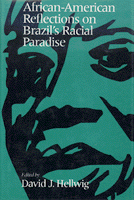

<body bgcolor="#FFFFFF" text="#000000" link="#0000FF" vlink="#CC0000" alink="#CC0000"><center><hr width="350" size="1" align="center" noshade>Essays that focus on the authors' observations of race relations in Brazil from the first decade of the century through the 1980s<hr width="350" size="1" align="center" noshade><p><a href="https://cdcshoppingcart.uchicago.edu/Cart/ChicagoBook.aspx?ISBN=9780877228929&&PRESS=temple" target="_top">Buy this book!</a> | <a href="https://cdcshoppingcart.uchicago.edu/Cart/Cart.aspx?PRESS=temple" target="_top">View Cart</a> | <a href="https://cdcshoppingcart.uchicago.edu/Cart/Cart.aspx?PRESS=temple" target="_top">Check Out</a></p><p></p></center><!--none//--><h1>African-American Reflections on Brazil's Racial Paradise</h1>
<h3>edited by David J. Hellwig</h3>
<P>cloth 0-87722-892-2 $49.50, Feb 92, <FONT COLOR=#990033>Out of Stock Unavailable</FONT>
<br>Electronic Book 1-59213-104-2 $44.95 <FONT COLOR=#990033>Out of Stock Unavailable</FONT>
<BR> 276 pp
5.5x8.25
</P><BLOCKQUOTE><I>"Hellwig has made a remarkable contribution to the literature and study of comparative race relations."</I>
<br>&#151<b>Anani Dzidzienyo</b>, Afro-American Studies and Portuguese-Brazilian Studies, Brown University<I></I></BLOCKQUOTE>
<p>At the turn of the twentieth century, the popular image of Brazil was that of a tropical utopia for people of color, and it was looked upon as a beacon of hope by African Americans. Reports of this racial paradise were affirmed by notable black observers until the middle of this century, when the myth began to be challenged by North American blacks whose attitudes were influenced by the civil rights movement and burgeoning black militancy. The debate continued and the myth of the racial paradise was eventually rejected as black Americans began to see the contradictions of Brazilian society as well as the dangers for people of color.
<p>David Hellwig has assembled numerous observations of race relations in Brazil from the first decade of the century through the 1980s. Originally published in newspapers and magazines, the selected commentaries are written by a wide range of African-American scholars, journalists, and educators, and are addressed to a general audience.
<BR>&nbsp;<h2>Contents</h2><P>
<p>Acknowledgments
<br>Preface
<br>Introcution: The Myth of the Racial Paradise
<p><b>Part I: The Myth Affirmed (1900-1940)</b>
<br>1. "Brazilian Visitors in Norfolk"
<br>2. "Brazil vs. United States"
<br>3. "Brazil and the Black Race"
<br>4. ''Brazil'' &#150 W.E.B. Du Bois
<br>5. "Opportunities in Brazil: South American Country Offers First Hand Knowledge of the Solving of the Race Question"
<br>6. "Brazil" &#150 Cyril V. Briggs
<br>7. "Wonderful Opportunities Offered in Brazil for Thrifty People of All Races" &#150 Associated Negro Press
<br>8. "South America and Its Prospects in 1920" &#150 L. H. Stinson
<br>9. "Brazil as I Found It" &#150 E.R. James
<br>10. "Sidelights on Brazil Racial Conditions" &#150 Frank St. Claire
<br>11. "My Trip Through South America" &#150 Robert S. Abbott
<br>12. "Sightseeing in South America" &#150 William Pickens
<p><b>Part II: The Myth Debated (1940-1965)</b>
<br>13. "The Color Line in South America's Largest Republic" &#150 Ollie Stewart
<br>14. "Stewart in Error &#150 No Color Line in Brazil" &#150 James W. Ivy
<br>15. Letter by W.E.B. Du Bois to Edward Weeks, Atlanta, Georgia, October 2, 1941
<br>16. "Brazil Has No Race Problem" &#150 E. Franklin Frazier
<br>17. "A Comparison of Negro-White Relations in Brazil and the United States" &#150 E. Franklin Frazier
<br>18. Excerpt from <I>Quest for Dignity: An Autobiography of a Negro Doctor</I> &#150 Thomas Roy Peyton
<br>19. "Brazilian Color Bias Growing More Rampant" &#150 George S. Schuyler
<br>20. "The Negro in Brazil" &#150 Lorenzo D. Turner
<p><b>Part III: The Myth Rejected (1965-)</b>
<br>21. "From Roxbury to Rio-and Back in a Hurry" &#150 Angela M. Gilliam
<br>22. "Brazil: Study in Black, Brown and Beige" &#150 Leslie B. Rout, Jr.
<br>23. "Equality in Brazil: Confronting Reality" &#150 Cleveland Donald, Jr.
<br>24. "'Mestizaje' vs. Black Identity: The Color Crisis in Latin America" &#150 Richard L. Jackson
<br>25. "Black Consciousness vs. Racism in Brazil" &#150 Niani (Dee Brown)
<br>26. "Brazil and the Blacks of South America" &#150 Gloria Calomee
<br>27. "In Harmony with Brazil's African Pulse" &#150 Rachel Jackson Christmas
</P><BR>&nbsp;<H2>About the Author(s)</H2>
<P><b>David Hellwig</b> is Professor of Interdisciplinary Studies at St. Cloud State University in Minnesota.</P>
<P>Contributors: Includes contributions from W.E.B. DuBois, Cyril V. Briggs, L.H. Stinson, E.R. James, E. Franklin Frazier, Angela M. Gilliam, Niani (Dee Brown), and others.</P>
<BR><H2>Subject Categories</H2>
<p><A HREF="/tempress/race.html" TARGET="_top">Race and Ethnicity</a>
<BR><A HREF="/tempress/african.html" TARGET="_top">African American Studies</a>
</p>
<p align="center"><a href="https://cdcshoppingcart.uchicago.edu/Cart/ChicagoBook.aspx?ISBN=9780877228929&&PRESS=temple" target="_top">Buy this book!</a> | <a href="https://cdcshoppingcart.uchicago.edu/Cart/Cart.aspx?PRESS=temple" target="_top">View Cart</a> | <a href="https://cdcshoppingcart.uchicago.edu/Cart/Cart.aspx?PRESS=temple" target="_top">Check Out</a></p><p><font face="Arial" size="1"><a href="copyright.html" onMouseOver="window.status='Web Copyright Policy';return true;" onMouseOut="window.status=''" title="Web Copyright Policy">&copy;</a> 2015 <a href="http://www.temple.edu" target="new" onMouseOver="window.status='Link to Temple University home page';return true;" onMouseOut="window.status=''" title="Link to Temple University home page">Temple University</a>. All Rights Reserved. http://www.temple.edu/tempress/titles/722_reg.html</font></p>